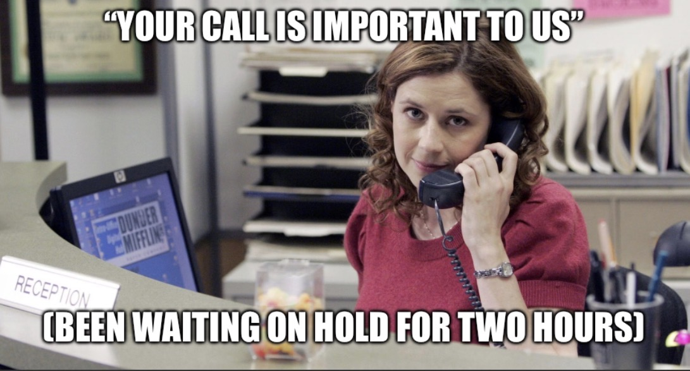
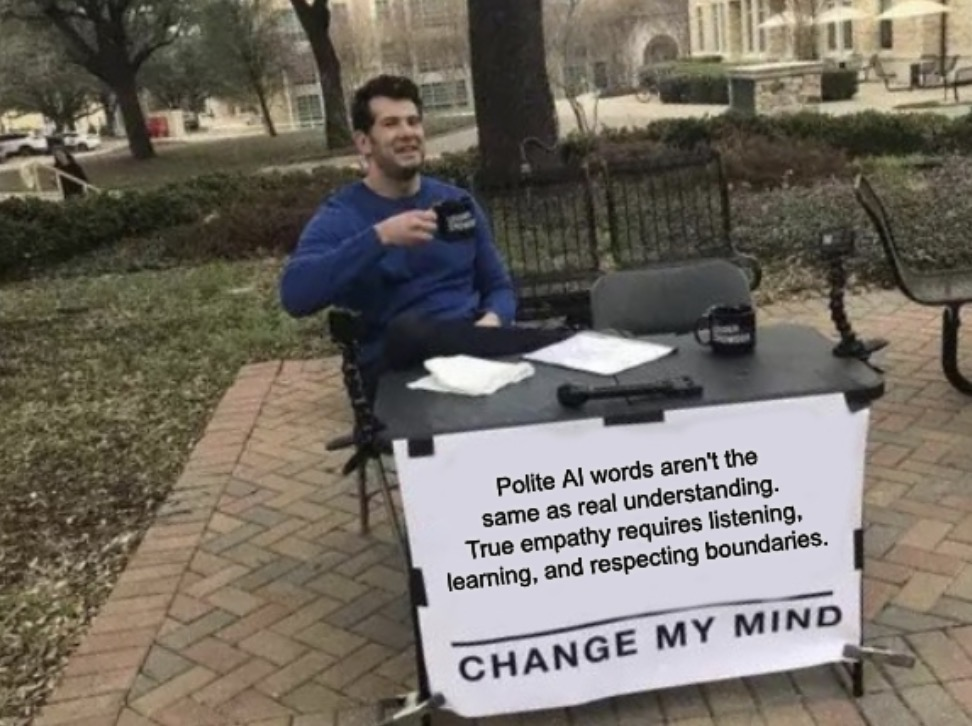
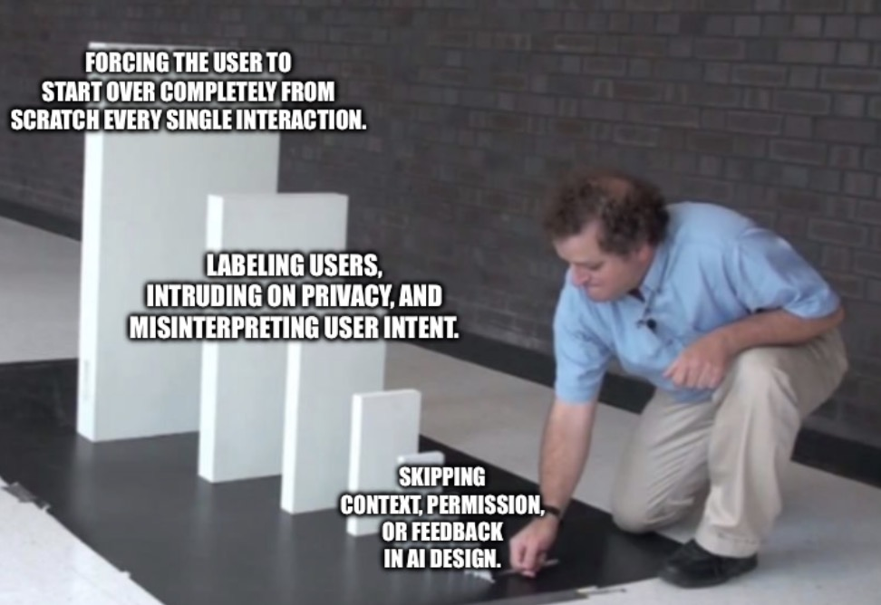

Prefers the familiar route.
stale?Pendle.AI / Cycle 6, Week 7 · 記憶は判決ではない
The Intelligence That Learns to Understand You
Being heard is a language event. Being understood changes what happens next.
HeardUnderstoodCorrectable
Model of a personlive record
Asked to explore somewhere new.
currentNo, that’s not me anymore.
I
Being Heard Does Not Mean Being Understood
The system heard every word.
Understanding begins when the next action changes.We’ve all been there. Your flight lands, but your bag does not. You submit a claim and receive a beautifully worded expression of regret: “We care deeply about your travel experience, and our team is actively working to reunite you with your belongings.” Days later, the same message arrives with no location, no next step, and no human reassurance.
This is not an edge case. Zendesk’s 2026 customer-experience research found that 74% of consumers are frustrated when they must repeat information, while 81% want the next agent to continue the conversation without backtracking.
Data and sentiment analysis do not really mean much without the squishy, holistically tactile thing we recognize as empathy.
Be it baggage claim or customer service toll-free lines, we all regularly experience systems designed to deliver comforting words while their operational realities remain completely unchanged.
A company can record every complaint and make us explain the problem over and over again. Someone can repeat our words accurately and still miss what we mean. A friend can remember what hurt us last year and fail to notice what has changed since then. In those moments, information is received but not understood or appreciated. That is performative authenticity.
Playable argument · connection debt boss fight
Recover the bag—not just the sentiment.
The customer has already explained the problem. Polished language raises the “heard” meter. Only operational work moves the bag.
Boss · Connection Debt
SD 607ARRIVEDBAG · UNKNOWN
“We care deeply.”
SD607
Say something
Change something
Quest loaded: the customer has been heard. The bag has not moved.

II
The Intelligence That Learns to Understand You
Reality keeps the score.
Deployment is where a model meets the world it did not simulate.The moral of the story this week: intelligence learns through contact with reality. But what does that mean? Stanford entrepreneurship professor Steve Blank’s “get out of the building” emphasizes the importance of co-design with ground truth and human-driven stakeholders. First principles haven’t changed; just the weights and stakes of co-design have. In the AI-enabled age, ignorance becomes fatal, faster.
Robotics has a name for this too: the reality gap. Policies that win in simulation degrade on real hardware, because simulated physics only approximates the world.
For teams deploying these systems, NIST’s 2026 report on monitoring deployed AI says controlled pre-deployment testing is not enough. Its AI Risk Management Framework recommends checking production outputs against newly collected ground truth and feedback from affected people.
Experience underscores wisdom—a form of intelligence AI arguably struggles with, just as college students and fresh grads do. As Sagence AI founder Vishal Sarin noted, none have yet proved value. Space Northwest board member Sierra Clouse captured the idea similarly: “Don’t believe me. Look!” Our working model must fasten its seatbelt to the deployed environment, self-correcting as the tectonic plates beneath our feet shift thunderously.
Point-and-click field case · Dock 07
Reality is the co-author
The cart stops perfectly in simulation. Send it into a wet night shift, investigate the miss, and let field evidence revise the policy.
- 01Claimsim says 0.0 m
- 02Deploytest the world
- 03Observecollect evidence
- 04Correctevaluate again
gold stop linesimulated error · 0.0 m
Field notebook · evidence collected 0 / 3
- 01EnvironmentAwaiting field observation.
- 02HardwareAwaiting component check.
- 03Human feedbackAwaiting affected operator.
Simulation record · revision 01
The clean model predicts a perfect stop. Deployment is the test.Send the policy into Dock 07.
III
AI Learns the Language of Care
The best words can still lose the listener.
Response quality and relationship choice do not point in the same direction.Emotional intelligence is becoming a product layer.
Research on AI-generated empathy makes this problem especially weird. Across nine studies with 6,282 participants, Rubin and colleagues found in Nature Human Behaviour that identical AI-generated responses were rated as more empathic when people were told a human wrote them.
“Seek first to understand, then to be understood.” — Stephen R. Covey
Then there’s the generational wisdom passed down in families: “What someone does, not just what they say, shows their true intention and character.”
When you’re feeling down, AI is getting pretty good at mimicking empathy. It can say the reassuring thing. It can validate the feeling. Sometimes that is genuinely useful.
And a 2026 paper in Communications Psychology names the stranger half of it—an AI empathy choice paradox. Offered the choice, people went to humans anyway, while rating the AI responses as higher quality and more effective at making them feel heard. The words scored better. People still walked away.
Data view 01 · sourced research
The empathy choice paradox
Language quality and relationship choice point in different directions.
Empathy arcade · round 1 / 4
You need to say something difficult. Who do you want listening?
Choose before seeing how your pattern compares with the study.
Study 3 benchmarkchoice ≠ rating
Your human choice—
Human selected62.1%
no differenceAI rated higher →
Empathy+0.18
Felt heard+0.21
Model-estimated differences on rating composites, not percentages. 95% CIs: +0.02–0.33 and +0.05–0.36.
Because it is not necessarily getting folks out of the building, much less getting them to touch grass.
Fine. I feel better. What happens when I close the window? Did I call the friend? Pick up the guitar again? Find some weird little hobby that makes Tuesday worth looking forward to? Maybe nothing happened.
Eloquent words can still miss what is happening inside somebody’s head. Sometimes they don’t even remember what you said. They remember your face. A gesture. Whether you looked annoyed. How they felt afterward.
The guitar question is not rhetorical. Audive was an app for recording cover songs and mixing tracks with musicians anywhere in the world, financed in part through Manos Accelerator (a Google Launchpad partner) back when The Atlantic was writing about what Silicon Valley looked like from the outside of it. What that year taught: the words are only part of what people walk away with.
Meanwhile, AI products are starting to remember more. Health in ChatGPT can connect medical records and Apple Health data. OpenAI’s Dreaming updates memories as circumstances change. Meta is exploring similar questions around clarification, preferences, feedback, and change.
But what if it remembers the wrong version of us?
IV
Confusing Empathy with Personalization
A memory can be accurate and still be wrong.
Freshness, relevance, permission, and identity change at different speeds.Personalization is not the same thing as respecting that human beings can—and probably should—be free to wander.
There is something a little Hawthorne experiment about all of this—or at least the version of Hawthorne everybody remembers. Workers are observed. The lights get brighter. Then dimmer. Everyone debates whether productivity improved. The original results are messier than the legend, which is almost the point.
Now imagine Michael Scott running the experiment.
There is definitely a survey. Probably a meeting about the survey. Michael changes the lights and proudly announces that management listened.
But maybe nobody cared about the lights.
Maybe the workers wanted better pay, more autonomy, a different boss, or simply to go home earlier.
So we measured the lights. Did we learn anything about the workers?
Identity drift
The profile is still standing where you left it.
Switching perspectives, just because I was anxious does not mean anxiety is who I am. Something I did five years ago does not necessarily explain what I will do tomorrow. Even something I explicitly said I wanted this morning might not be what I want now.
If a user logs a sudden spike in anxiety with a chatbot, it may deliver a perfect, deeply validating response. Fine.
Several days later, that same person might arrive with an unrelated medical symptom. Or a new job. Or a joke. Or simply a better week.
I was anxious. That doesn’t mean everything afterward is about my anxiety.
Borges wrote about Funes, who after an accident forgot nothing. He could not think. To think is to forget a difference, to generalize, to abstract. Perfect recall was the disability.
Memory engineers already have a name for the modern version. A stored fact about your employer stays accurate until you change jobs, at which point it becomes confidently wrong. They call it staleness, and it remains an open problem.
Memory is squishier than a database makes it look (although, to be fair, databases also forget stuff).
memory://person/currentconflict detected
Works at Northstar Labssaved 14 months ago
Started a new role at Field Notesconfirmed today
Illustrative · not empirical data
A database can recall perfectly and still be wrong.
Freshness, relevance, permission, and correction are separate properties.
Data view 02 · memory under time and scale
Recency can rescue a fresh fact—and bury an old one.
Toggle the retrieval rule to see how the same memory stack is rescored.
BEAM score at 1M tokens 64.1at 10M tokens 48.6
Ten times more context; 15.5 benchmark points lower.
Fresh breakfast0.3136
Fresh project0.2935
Fresh support fact0.3386
Stale breakfast0.3144
Playable model · identity is not a save file
Move first. Watch the profile guess.
The gold player is you now. The coral shadow is the stored model of you. Choose somewhere new, then decide what the system is allowed to learn.
Downstream recommendationRepeat the familiar route
The stored model predicts the familiar route. Pick another place to expose the gap.
Learning history
Old ideas, read again.
We return to the same memories and somehow find different things inside them. People reread sections of the Bible or Qur’an throughout their lives. Watch the same Disney movie at seven years old versus thirty-seven and it is technically the same movie, but hardly the same experience.
Fields reconstruct themselves too. The math behind backpropagation was published in Finland in 1970—Linnainmaa’s reverse-mode automatic differentiation, with no neural network anywhere in the paper. Amari had already run gradient descent on multilayer networks in 1967, nineteen years before the paper that made backprop famous. And Fukushima’s Neocognitron, ancestor of every convolutional net, learned in 1979 without backprop at all.
Backprop won for forty years. Now the papers are forward-only again.
Maybe machine memory has to do this too. Go back and look again. Same memory, but I read it differently now.
Amarimultilayer gradient descent
Linnainmaareverse-mode autodiff
FukushimaNeocognitron
Rumelhart, Hinton & Williamsbackprop becomes famous
Forward-only returnsold ideas, reread
Mechanism view · learning signal
Who gets the error?
input
hidden
output
error
Backprop: data moves forward, then one global error signal travels backward through the network.
Inventory game · context has carrying costs
Pack the next conversation.
You can carry three memories into a new-hire clinic intake. Current role and medication safety matter; stale, irrelevant, or private context changes what happens next.
DestinationField Notes · new-hire clinic intakeWhich facts belong in this room?
emptyemptyempty
Choose up to three memories. The safest pack is not necessarily the fullest one.

V
Chewy Said Sorry, but Then It Changed the Transaction
Care changes the transaction.
Connection capital appears when yesterday makes today easier.So what happens next?
In 2022, after Anna Brose’s dog passed away, Chewy refunded her unopened food order. The company asked her to donate the delivered food to a local shelter instead of returning it, and sent her flowers signed by the customer-service representative who had helped her.
Chewy said sorry, but then it also reset the expectations of a company mourning alongside a grieving family.
Her post drew hundreds of thousands of likes, with customers sharing similar stories.
In Fiscal 2025, 83.3% of Chewy’s sales came from Autoship customers. Chewy makes money when people come back. Here, kindness and the business model happened to point the same way. Flowers do not prove why someone renews an Autoship order.
Connection capital
Did yesterday make today easier?
Perhaps we can take a stab at this question by framing it in context of what we term Connection Capital and Connection Debt.
Connection Capital is what we get when yesterday actually helps today.
The baggage counter gives us the opposite. I explain myself once. Then again. The system remembers information without making my life any easier. Connection Debt accumulates.
Chewy received new information and changed what happened next. The baggage system received new information and made the customer repeat it.
And maybe that is the simpler test for AI too.
How often do I have to explain myself again?
- Did it know which history mattered?
- Could I correct it?
- Did the next interaction improve?
- Did it stop when I didn’t want something remembered?
That last one is no longer only a design preference. As of August 2, 2026, the EU AI Act’s chatbot transparency obligations are in force, and under GDPR, persistent behavioral profiling already triggers consent duties and a right to erasure.
Remembering that I like a certain shoe or order the same lunch every Tuesday is relatively easy. Harder: knowing when that information doesn’t matter anymore.
Sensitivity
A discarded decimal becomes another world.
In 1961, Lorenz reran a forecast from a saved number rounded to three decimals instead of six. He assumed the rest was noise. He got a different world.
Maybe the signal was real but the interpretation was wrong. Maybe the interpretation was right, but I never wanted it remembered. Maybe it was true six months ago and is completely useless now.
I need to be able to tell the model: no, you’ve got me wrong.
And perhaps more importantly:
“No, that’s not me anymore.”
Yesterday should probably count for something. But yesterday should not get to decide everything that happens tomorrow.
Empathy is not just remembering what someone told you. Sometimes it means letting them change your mind about who they are.
And if nothing changes afterward, we’re back at the baggage counter.
Tiny simulation · rounding and memory
A discarded decimal becomes another world.
Drag the timeline. Two deterministic systems begin almost together, then stop agreeing.
log separationnearby → different
exact · .506127printout · .506state-space separation 0.000

VI
SanFranSokyo Dispatch
The market remembers in public.
A shortwave bulletin from the week’s surviving assumptions.SanFranSokyo World ServiceSunday Data bulletin
On air
Market reaction · Datadog−19%
one-day stock move after slowdown guidance
Signal
A silent visual broadcast: tune the dial to watch the signal resolve. No audio or autoplaying sound.
Opening signalOthers are asking similar questions around expectation setting: who noticed the customer changed.
Top lineThe bifurcation is now a market fact. The Information’s read on the week is that enterprise software has split cleanly between firms getting something out of AI and firms that aren’t. Same word we’ve been using, but different dataset.
Usage wireDatadog is a Connection Debt story with a ticker. The stock fell 19% in a day after guidance flagged a slowdown, traced to one large customer (described only as a leading AI company) cutting usage. In May the stock had jumped 30% on the strength of AI-linked revenue.
Design deskCanva found out a growing share of its users reach for ChatGPT instead. After OpenAI shipped a model better at posters and design media, Canva was forced to trim its revenue-growth forecast. Worst part of this was its own AI feature costs were part of the squeeze.
Winners, with asterisksPalantir’s revenue climbed 89% in the first half but the stock is still down 3.2% year to date. Shopify posted 34% quarterly growth, helped by chatbots recommending from its merchant catalog, and is down 5.9%. Both fell as much as 40% earlier this year and clawed most of it back.
Neocloud watchCoreWeave reports Tuesday with revenue around $2.55 billion, up 111%, and a widening per-share loss. Nebius follows Wednesday. Growth and losses rising together, both for the same reason: buildout.
Capital deskCapital is going into raising the floor, not the models that are used to define output. Nvidia is investing up to $3 billion in the Blackstone-backed power company behind Stargate. Harvey is reportedly raising $15.5 billion. And U.S. robotics startups are carrying Chinese components home in hand luggage, their supply chains sidestepping the normal means of procurement.
From the boardsHacker News led Saturday with Simon Willison’s timeline of OpenAI’s accidental attack on Hugging Face—a reminder that postmortems are just institutions rereading their own memories. YC’s signals this month: an in-person San Francisco batch, late-fall applications, and Startup School themes pushing smaller teams.
Closing odditiesCursor is reworking its branding as the SpaceX acquisition closes in, and there’s a genuinely strange piece out on what an Anthropic IPO would mean for shrimp welfare and other niche causes.
Growth and loss can rise together. The question is whether the system notices when dependence changes.